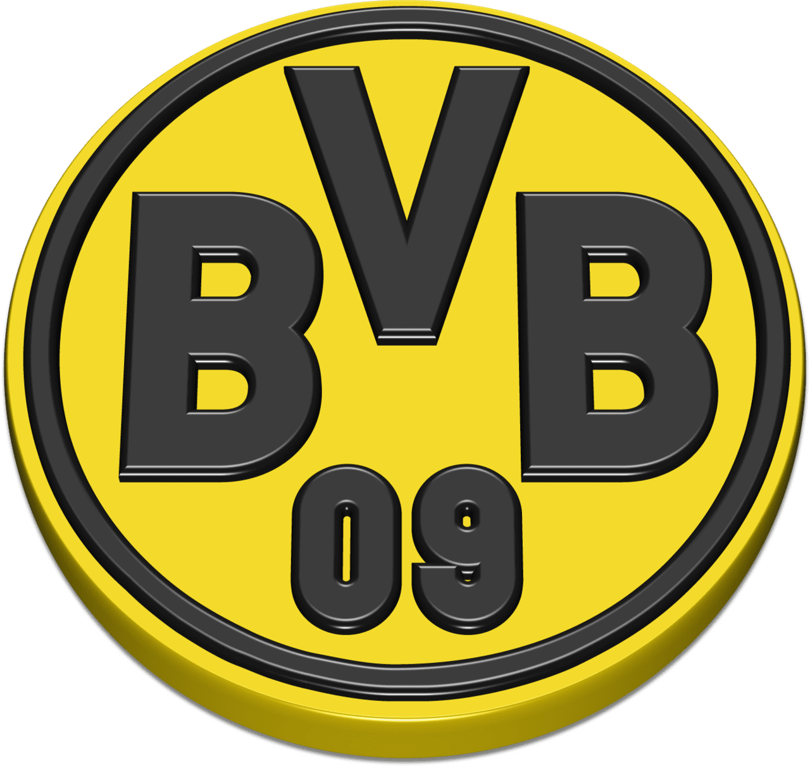
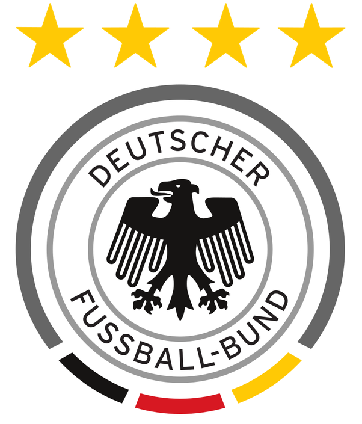

I am a Professional graphic designers with highly skilled and experienced individuals who bring a sophisticated level of expertise to the field of visual communication. Armed with a deep understanding of design principles, color theory, typography, and industry-standard software tools, these professionals create visually compelling and effective designs across various mediums. Whether crafting logos, branding materials, print publications, or digital assets, professional graphic designers seamlessly blend creativity with strategic thinking. They often work closely with clients or creative teams to understand the objectives and target audience, ensuring that their designs not only meet aesthetic standards but also effectively convey the intended message. In addition to their technical proficiency, professional graphic designers stay abreast of industry trends, continually refining their skills and embracing innovative approaches to design. Their contributions play a pivotal role in shaping the visual identity and communication strategies of businesses and organizations.